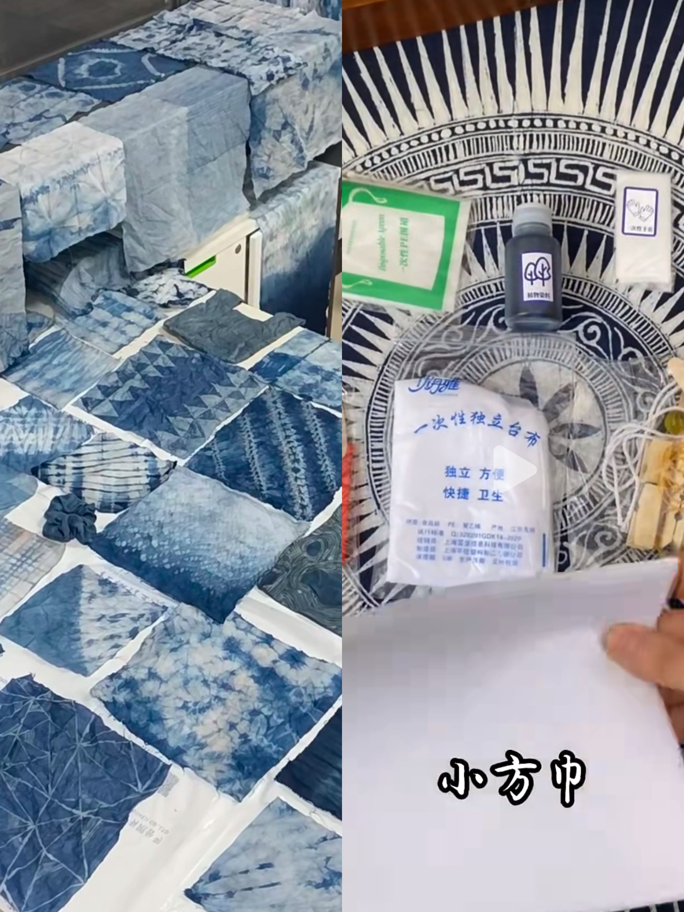

扎染材料包，邂逅布上“青花”
|  |
DIY扎染扎染，这项古老工艺晕染千年风华，从民间土布到时尚秀场，魅力不减。想让指尖触碰传统艺术，亲手定格绚丽色彩吗？咱们的扎染材料包，正是 DIY 创意魔法盒。 包里好物满满，天然纯棉布料，亲肤透气、吸水性佳，能快速吸附染料，是色彩“画板”首选；植物染料，萃取自天然草木，无毒无害、色泽温润，板蓝根靛蓝、苏木红，缤纷却不失雅致；还有弹力皮筋、木夹等扎结小工具，帮你拿捏独特纹理。操作超省心，按指南折叠布料、随心捆扎，松紧间决定留白与上色程度，再浸入染料，静待色彩渗透、交融。单人创作时，沉浸在配色、造型构思里，疗愈又解压；亲子齐动手，孩子新奇尖叫，见证普通布料变梦幻彩绸，温馨满溢；朋友聚会玩扎染，件件成品独具风姿，情谊添一抹艺术亮色。 用这材料包开启扎染旅程，把斑斓创意穿在身上、挂在家中。快来解锁，让每块布都因你重生，绽别样花火。 |